5daaa586.json
Navigation
Train Examples


Test Example


Participant 1
Initial description: the inner bars go to the outside, the bottom bar goes to the bottom. the inner dots are turned into bars like a bar graph
Final description: the border colors are formed by shifting the lengthwise bars to their nearest border. the inner colors form bars extending from their same color lengthwise bar somehow

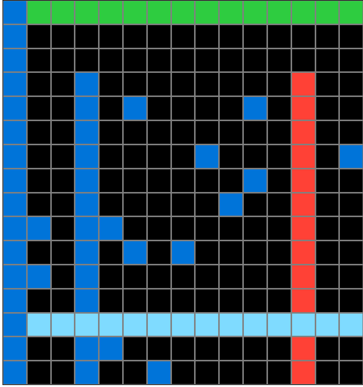
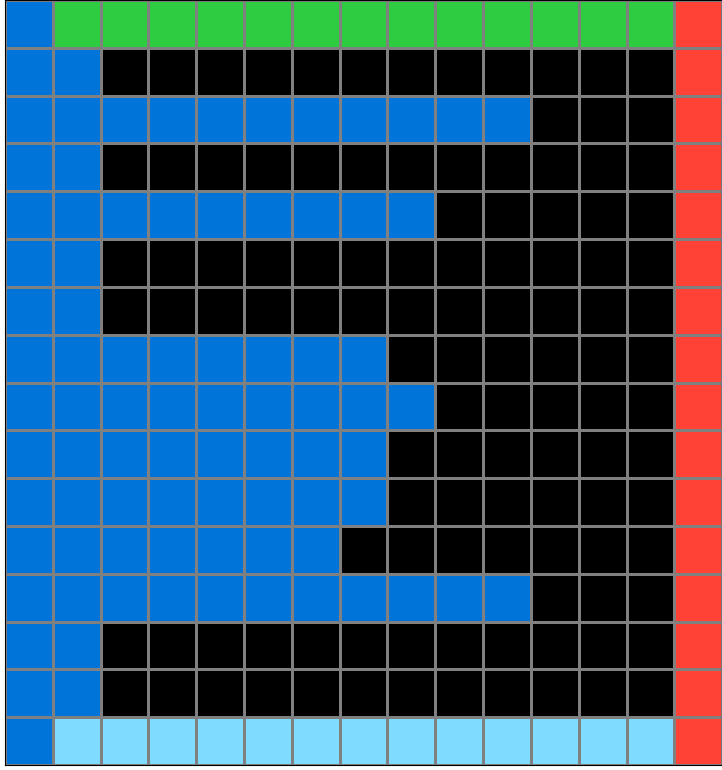
Participant 2
Initial description: The lines going vertically and horizontally are stretched out to be the new borders of the grid while everything else other than the colored liens remains the same.
Final description: I thought I had to expand the middle colored lines to be the new border of the edges of the grid and I thought the middle blue cells could be aligned at the bottom depending on how many there were.
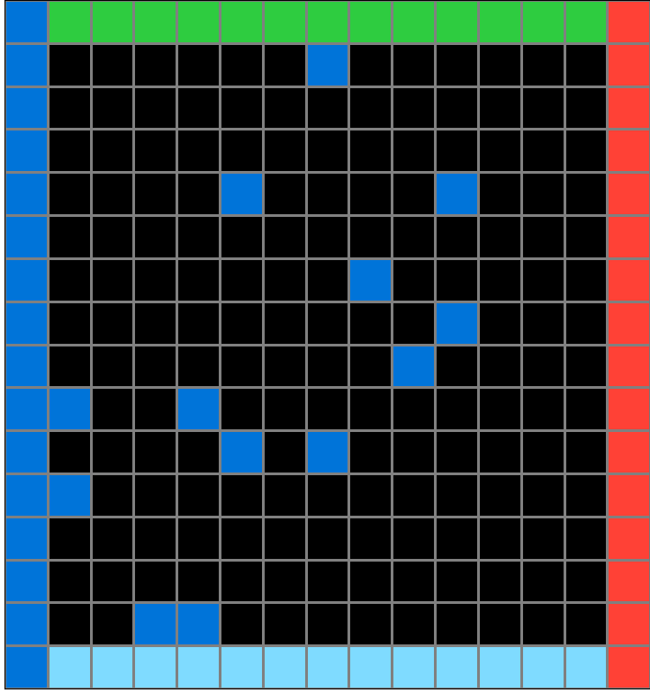
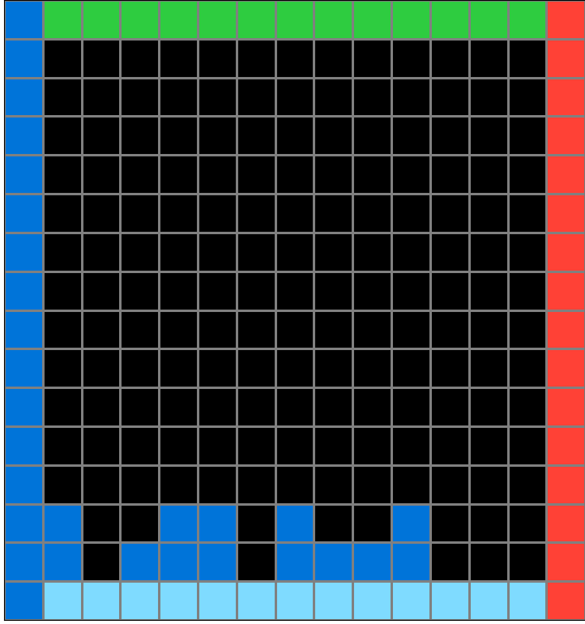
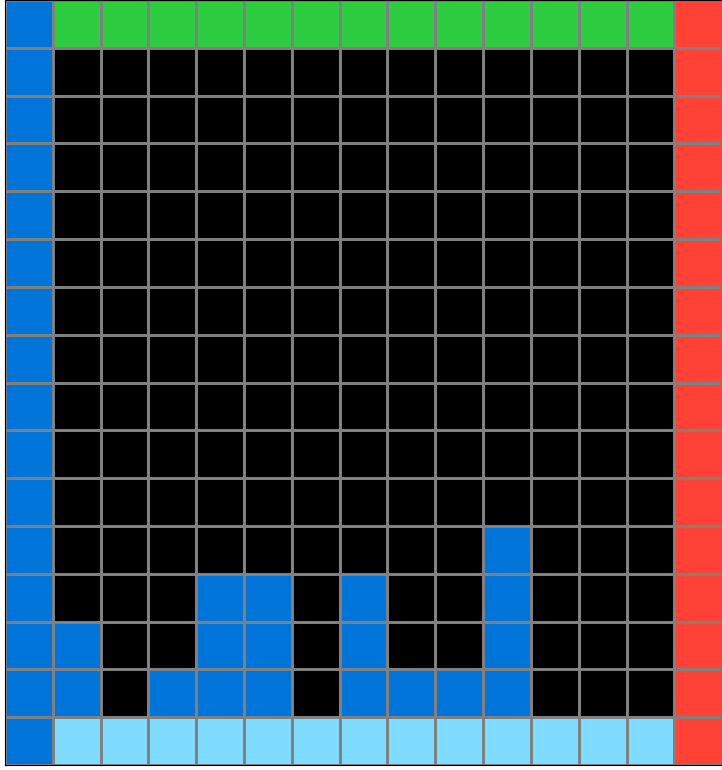
Participant 3
Initial description: I believe the rule is to use the inner lines of color as the border in the output graph. Then use the majority color, which is the color that has blocks spread throughout, as the base color after inputting the lines. Then going in the opposite direction of the base colored line, fill in a line to the outermost block of that color.
Final description: I believe the rule is to use the inner lines of color as the border in the output graph. Then use the majority color, which is the color that has blocks spread throughout, as the base color after inputting the lines. Then going in the opposite direction of the base colored line, fill in a line to the outermost block of that color.

Participant 4
Initial description: Crop the grid down to the middle shape formed by the four color lines, include the lines exactly as they were from the input. Determine the color of the squares inside the shape, and connect the squares to the line with the same color. Only go up as far as the square farthest away from the line.
Final description: Crop the grid down to the middle shape formed by the four color lines, include the lines exactly as they were from the input. Determine the color of the squares inside the shape, and connect the squares to the line with the same color. Only go up as far as the square farthest away from the line.

Participant 5
Initial description: Make a 10x16 grid, get the border colors the same, use the base color for the "spikes" to figure out the direction - in this case, the dark blue is on the right, so it should go right to left.
Final description: Make a 10x16 grid, get the border colors the same, use the base color for the "spikes" to figure out the direction - in this case, the dark blue is on the right, so it should go right to left.
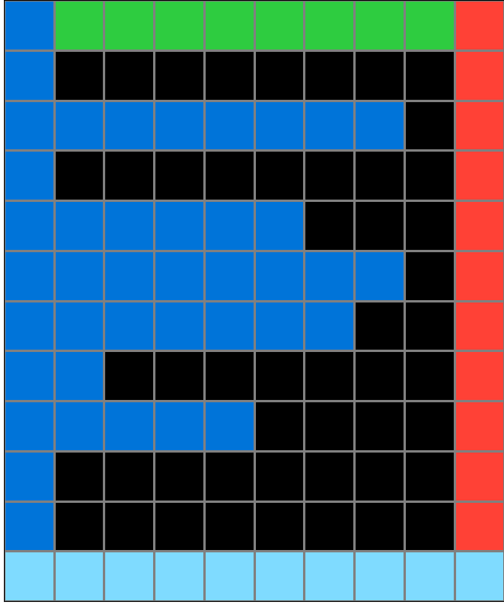
Participant 6
Initial description: First I select the squares and fill the colors
Final description: yes
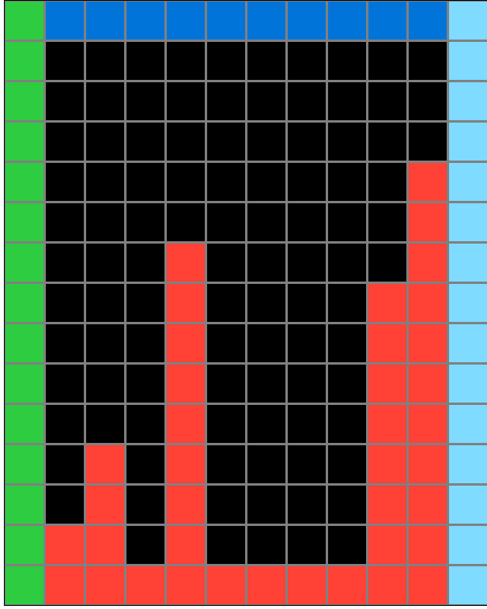
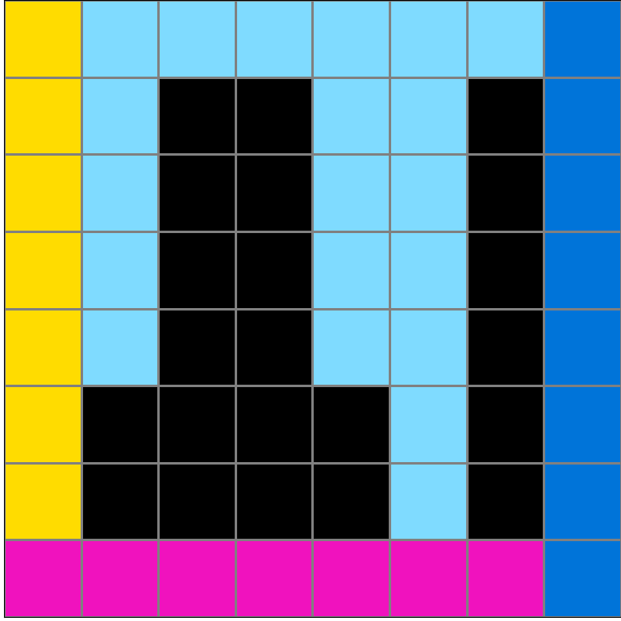
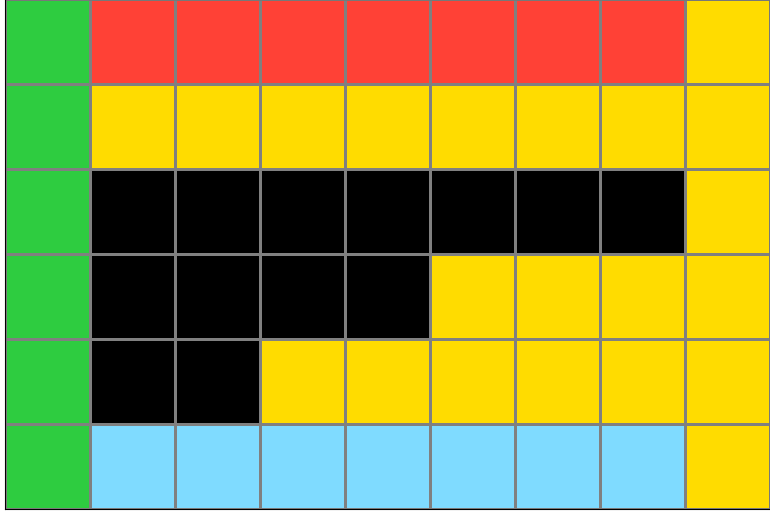
Participant 7
Initial description: Moving the lines to the edges and using the spotty color for the bars.
Final description: I thought to follow the output example.
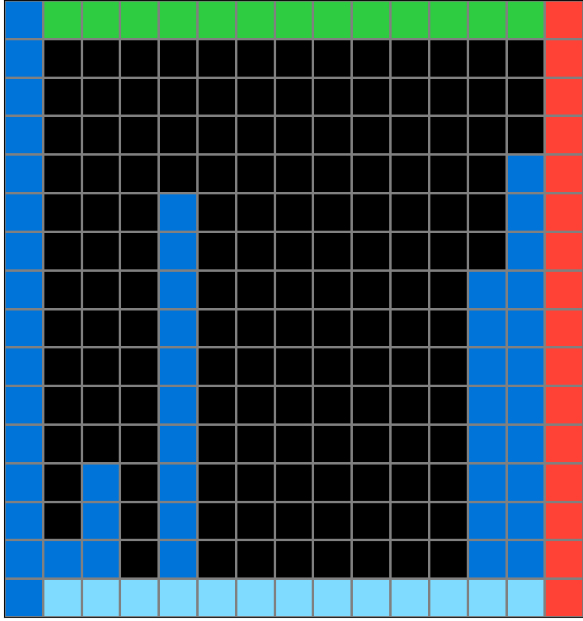
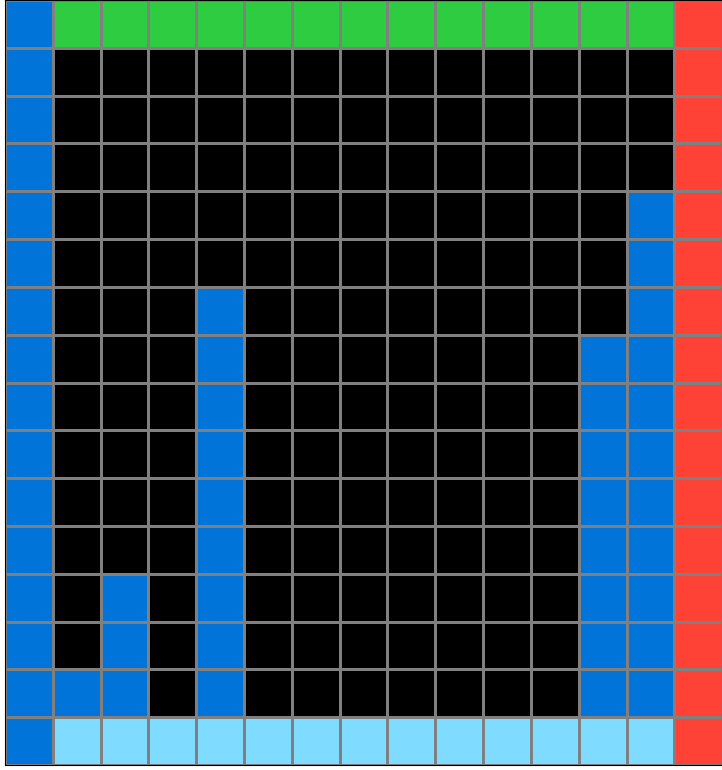
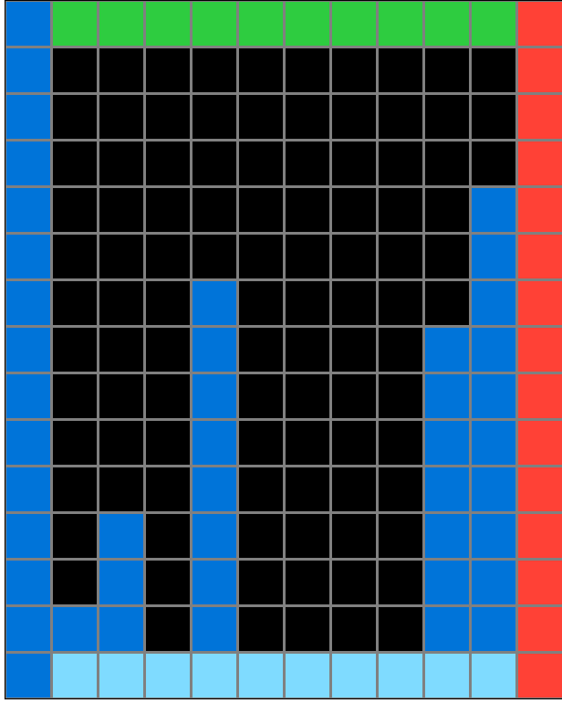
Participant 8
Initial description: I made the inner of each and then went from the color of each shape from the line that they matched.
Final description: I made the inner of each and then went from the color of each shape from the line that they matched.